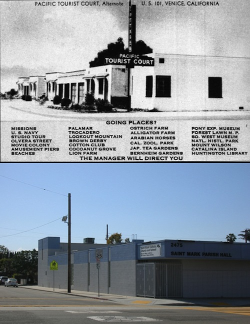

Venice Yesterday & Today
A couple months ago I received an email from my pal Todd von Hoffmann,
exclaiming this great old ad he'd recently found of the New Castle Apartment Building, located at Thornton Avenue and Speedway. It was from 1912, showcasing how Venice's advancement in real estate was shown in all the new buildings being built. Then, the next day, I received another email from him showing the present building alongside the original ad.
Voilà! What a great idea! How about a journey through Venice history from old photos, with updated shots of the present locations?
Here's the original ad and present-day apartments. Not much has changed, except for the great roof garden, gonno, and the wrought iron railing. It was in the top apartment that I had commented "I'd party up in the top loft [of the Thornton Tower building], back in the day..." that led to my recent column about partying in Venice.

Elayne Alexander's recent book 'Venice, A Postcard History' contains an interesting postal card of the Pacific Tourist Court, located at 2475 Lincoln Boulevard. Today it's the Saint Mark Parish Hall, in a very similar configuration to the original building.
Venice´s first newspaper, started in 1911, was the Venice Vanguard. It began as a weekly and, after a year, became a daily paper until it ceased publication in 1940. It's location was 120 Mildred Avenue at Strongs Drive. Today, the building remains approximately the same, but now houses Red Meat Design, a web and graphic design firm.
Which leads me to our local tour. The top view shows the mini-railroad going over the Grand Canal bridge at today's Riviera Avenue. Note the old tin lizzie also straddling the bridge. Today, practically all remnants of the "old days" have been obliterated, save for the old house - in the middle distance in the old photo - which still stands on Rialto Avenue.
The United States Island back in the day offered small bungalows for rent, each bearing the name of a different state. Canal-side luxury, if you didn't mind getting around in a canoe. Today, the palm trees have grown impressively, and the bungalows remain, this at the intersection of Windward Avenue and Altair.
The Venice lagoon was a vast water-filled arena for boating, diving, swim races, water basketball, and other water-related activities, right in the heart of Venice of America. The Antler Hotel was a true Venetian-insp ired architectural wonder. Today, the lagoon's been filled-in and turned into one of Los Angeles' largest traffic roundabouts, the Windward Circle. An homage to the old Antler was designed by Steven Ehrlich in 1986, entitled the Windward Circle Arts Building, which dominates the northeast section of this area.
Here's another view of the lagoon, once again featuring the Antler Hotel on the left, and the lush Burbank Park between Lion Canal (Windward) and the Grand Canal (Grand Boulevard). Boy, could I have spent countless hours on one of those benches, lolling away the time gazing out over the waterways. Today, the same view offers the Ehrlich homage to the old Race Through The Clouds rollercoaster, the building to the right in the picture from 1987, which holds the Main Street Video store, a smoke shop and upstairs offices.
This view looking south on Coral Canal (Main Street) clearly shows the gargantuan Race Through The Clouds rollercoaster, the very first racing coaster on the West Coast. Today, the same view from Horizon Avenue reflects the lush ambiance of earlier days, although the mode of transportation has been updated.
In the 1920s, the building at Windward Avenue and Trolleyway (Pacific Avenue) housed the Pacific Southwest Bank. The structure featured the unique and ornate details prominent all along the downtown district of Venice. Today, the Café Collage inhabits the same space, but the building only retains its arched colonnades. In 1965, most of the historic buildings in this area lost their upper floors and ornamentation, due to the city of Los Angeles' requirement to "get rid of all the old, unsafe buildings" and make them more safe. And take away the great character of the entire neighborhood.
Here's an old postcard showing the grand entrance to The Race Thru The Clouds rollercoaster, which opened on July 4, 1911. More than 25,000 people rode it on its opening day. Today, the same view shows the old Rexall Drug building, at Pacific and Windward, with a variety of tenants, including the now-gone Benway Records shop.
If you were coming to early Venice, you'd probably take the electric cars on the Venice Short Line, and exit at Windward Avenue. Here's an old postal view featuring two trains loading up visitors. Today, the same view mainly shows the ornamental stripping of the old buildings, the original Windward Hotel on the left, now housing the youth hostel, and the old bank building on the right, now featuring Mao's Kitchen and Gotta Have It clothing shop.
The Venice of the 1920s was a hopping place. I just love the ambiance of this original stereoscope photo, especially the great view of the Venice sign and the colonnaded walk along the south side of Windward Avenue. By then, the street had earned the title "Road to a Thousand Wonders." Today, the same view shows a bastardized version of the original scene, but at least the Venice sign is back, reborn and relit in June of 2007.
Here's another comparison of the area around Windward Avenue and Pacific. In the old days, you could catch the mini-railroad at its terminus, for a ride through Venice to hopefully entice oneself into maybe purchasing a lot, or at least offer up some of the various attractions afforded in Venice of America.
Another angle on this much-photographed intersection. How cool is the colonnaded promenade festooned with colorful bunting and hanging flags? Today, Robert Graham's mammoth studio building dominates the north side of Windward, which the historical society is planning to refurbish with new columns and an arched walkway. Good luck to them.
Along Ocean Front Walk at Market Street, the original building on the southeast corner housed the Mecca Buffet, a high-class dining establishment that featured a saloon as well along Market Street. After Prohibition took effect in 1920, the restaurant/bar became a drug store. Later, in the 1940s and 1950s, it featured the Bridgo Fortune bingo parlor, run by John and Bill Harrah. After they moved their gambling operation to Reno, the next incarnation was the famous Gas House, a beatnik coffeehouse that was only open from July, 1959 until closing in 1960, and being finally demolished in 1962. Today, the Venice Sidewalk Market is all that remains of this historic Venice location.
Moving north along the boardwalk, across Market Street from the Mecca Buffet, was the grandiose Neptune Theater, which was opened in 1911 by vaudeville impresario Arthur Hyman. The 750-seat theatre featured his vaudeville circuit shows and early silent films. Today, the arched colonnades are back, only this time it's more of a tourist shopping location, from Big Daddy's to Zoltar, the talking crystal ball magician.
Market Street, between Speedway and Pacific, was a gritty, second-rate hotel avenue in the early days of Venice. At the far end on the right was the famous Haley Hotel, where many musicians such as Benny Goodman, Glenn Miller and Ben Pollack stayed while performing at the Venice Ballroom. This street also featured many stores and restaurants, and was featured in Orson Welles' 1958 film "Touch of Evil". Today, it's home to restaurants, galleries, movie production offices and recording studios.

Back on Ocean Front Walk just north of Market Street, the old Conron building, originally built in 1913, became a vacant derelict space for motorcycle gangs to congregate at in the 1960s. Early that decade, the portion to the right was an artist's studio and gallery. The Peace and Freedom logo, painted on the upper portion, attested to the political leanings of the town during that time. Today, the area offers more tourist-related shops, especially the great Sharkey.
The gallery and artist studio in the 1960s belonged to Earl Newman, who brought beach sand into the space to cover up the bad floors. He lived there with his family of four for two years. Today, the gallery's front doors open onto Small World Books, and the old open archways are now part of the seating area for the Sidewalk Café, which opened in 1976. The vacant building had stood abandoned for almost 20 years, and is now another Venice landmark.
This old photograph is one of my personal favorites of Venice. It's looking west along Horizon Avenue, from Innes Place toward Pacific Avenue in 1929. I just can't get enough of all the signage. Today, interestingly enough, the street scene feels pretty much the same, although the ubiquitous autos kind of ruin the peaceful meandering ambiance for me.
The photo on the left was taken of Westminster alley in the 1970s. The photo on the right was taken in 2009. Hardly any change has occurred. Just bigger phone and power poles. Go figure.
Another photo from the 1970s along the boardwalk, looking south towards Brooks Avenue. This shot says it all: cops and hippie bongo players. In the background to the right are the old restrooms, which replaced the Spanish-styled lifeguard headquarters building, erected in 1927. Today's view offers the same scene, only more packed on a regular basis, with the newly installed restrooms from the 2000 refurbishment of Ocean Front Walk.
The North Beach section of Venice has always had a large Jewish contingency, and this photo from the late 1960s shows the old Congregation Beth Yehuda synagogue at Park Avenue and Ocean Front Walk. Today's updated building houses offices for attorneys.
This "residence street" postal card shows the unique quality of North Beach walkstreets. No traffic to worry about; clean, open yards for the kids to play in, and a beautiful ocean view, along Park Avenue. Today, this section of Venice is highly coveted for much the same reason, although it now seems that fences are mandatory, and good luck finding a place to park.
The old Paloma Apartment building, aptly named due to its location at Paloma Avenue and the oceanfront, was a stately brick edifice. Today, the structure is nearly identical, and houses the drug rehabilitation facility Phoenix House.
This building, at 323 Ocean Front Walk, just north of Dudley Avenue, once housed a kosher meat market and a podiatrist. As is obvious. This was in the 1970s. Today, it can be easily identified as the location of the Venice Bistro. This whole conglomeration of buildings, from the Bistro through the Candle Café, Piccolo, the late Sponto Gallery and Henry's Market are all owned by James Adelstein of the Northwestern Engineering Company.
In the film "Cisco Pike" from 1972, Kris Kristofferson played a drug dealer who had a cool pad on the boardwalk. I always thought it would be a great place to live, if I could ever find it. Thanks to Hollywood, it was ultimately all a fake set. But the location stuck with me, and I'm glad that I could locate it later when I moved to Venice in 1974. The photo here shows just a lowly door, next to the Israel Levin Seniors Center. Today, the same location houses a bicycle and skate rental spot, with no recollection of that profound film spot. Please try and see this film, it's a true Venice historical remembrance.
At the corner of Rose Avenue and Speedway, the old Hotel Rose provided the most modern of conveniences. In true Southern California style, it was postcard worthy. Today, the same apartment building features almost the same edifice, without the typical roof-garden complex of the early 1920s, and just recently it painted over the Abbot Kinney memorial murals that so dedicated its historical significance to this great town of Venice. What a shame.
The Castaneda, at 51 Rose Avenue, has held its tourist-friendly edifice for over 70 years. Nothing much has changed. Today, the apartment building maintains its Venice heritage, while upholding the North Beach cool ambiance that has always kept it going.
In this photo from the 1920s, Engine Company 62 held forth from their firehouse at 213 Rose Avenue, at the corner of Main Street. Back then, it was part of Ocean Park. Today, the old structure maintains its integrity, now serving as a local meeting spot and restaurant.
This being Southern California, and with the influx of the surfer culture, starting with George Freeth in 1908, it was inevitable that this postal card image of local surfers from 1930 would be an important selling point for the beach town of Venice. In the background is the Venice pier, showing the Bamboo Slide and the Giant Dipper Coaster. Today, there's surfing galore, from north of the present Venice pier, where this photo was taken, to the prominent VBWL spot, the Venice Breakwater Locals, just north of the old Venice Pier. Surf on!
Speaking of surfing, Dennis Wilson, the first member of The Beach Boys to record a solo project, released "Pacific Ocean Blue" in August 1977. The album received glowing reviews for its depth and emotion. This promotional photograph of the only surfing member of the band was by Dean Torrance, of Jan and Dean fame, for his graphic design firm Kittyhawk Graphics. It was taken under the Venice pier, which originally opened in February 1965. Today, the same view with extra added plumbing. The subject matter is another story...
|